Géographie et éducation à la citoyenneté
06 / 11 territoires
Le territoire énergétique du Québec
Territoire région · Régional · La production hydroélectrique et ses effets
- aménagement
- autonomie
- commercialisation
- dépendance énergétique
- effet de serre
- mondialisation
- multinationale
- réchauffement
- ressource
- source d'énergie
- La Jamésie
- La Côte-Nord

Mise en contexte
Un territoire énergétique s'organise autour de l'exploitation et de la commercialisation d'une ressource naturelle. Pour répondre à une demande d'énergie qui ne cesse de croître, il faut favoriser le développement à long terme de cette ressource par une gestion responsable, qui tient compte du respect de l'environnement. Le programme propose quatre territoires énergétiques et l'étude de l'un d'eux est obligatoire : l'Alberta, le golfe Persique, la Côte-Nord et la Jamésie. Sur cette page, il sera question des deux territoires québécois, la Jamésie au Nord-du-Québec et la Côte-Nord.
Concepts à l'étude
- Aménagement : l'ensemble des interventions par lesquelles on organise un territoire. Ici, ce sont les barrages, les réservoirs, les centrales, les lignes à haute tension et les routes qui y mènent.
- Autonomie : la capacité d'une société à décider par elle-même. En matière d'énergie, une société autonome produit ce qu'elle consomme au lieu de dépendre d'un fournisseur étranger.
- Commercialisation : le fait de transformer quelque chose en produit que l'on vend. L'électricité se vend aux Québécois, mais aussi aux réseaux voisins de l'Ontario, du Nouveau-Brunswick et du nord-est des États-Unis.
- Dépendance énergétique : la situation d'un territoire qui doit importer l'énergie qu'il consomme. Le Québec est autonome pour son électricité, mais totalement dépendant pour le pétrole, qu'il ne produit pas.
- Effet de serre : le phénomène par lequel certains gaz de l'atmosphère retiennent la chaleur du Soleil près de la surface de la Terre.
- Mondialisation : le phénomène par lequel les sociétés du monde deviennent de plus en plus liées les unes aux autres, ce qui accélère la circulation des idées, des biens et des personnes.
- Multinationale : une entreprise qui exerce ses activités dans plusieurs pays. Les alumineries installées au Québec en sont, tout comme les entreprises étrangères qui y ouvrent des centres de données.
- Réchauffement : la hausse de la température moyenne de la planète, provoquée par l'augmentation des gaz à effet de serre dans l'atmosphère.
- Ressource : ce qu'un territoire possède et que l'on peut mettre en valeur. Ici, c'est l'eau, ou plus exactement la force de l'eau qui descend.
- Source d'énergie : ce à partir de quoi on produit de l'énergie. On les classe en sources renouvelables, comme l'eau, le vent et le soleil et en sources non renouvelables, comme le pétrole, le gaz et le charbon.
Les besoins énergétiques du Québec
Le Québec produit environ 213 térawattheures d'électricité par année, soit à peu près le tiers de toute la production canadienne. C'est la province qui en produit le plus. L'hydroélectricité en fournit environ 94 %, l'éolien 5 %, et le reste vient de centrales thermiques et de quelques installations solaires.
Source : Régie de l'énergie du Canada, données de 2021, et État de l'énergie au Québec
L'électricité n'est pas toute l'énergie
C'est ici qu'il faut être attentif. Le Québec produit une électricité presque entièrement propre, mais l'électricité ne représente qu'une partie de l'énergie qu'il consomme. En 2022, la consommation totale d'énergie du Québec atteignait 496 térawattheures, et les énergies fossiles en comblaient encore 52 %, essentiellement du pétrole importé. Autrement dit, le Québec est autonome pour son électricité et complètement dépendant pour ses carburants. C'est cette moitié fossile que la transition énergétique cherche à remplacer.
Source : Gouvernement du Québec, portrait énergétique, données de 2022
Qui consomme quoi
Source
Frimufilms, Two charging electric cars at charge station in the city, repris dans le dossier du RECIT, Service national du RECIT, univers social. Licence : Creative Commons.La consommation finale d'énergie du Québec se répartit entre quatre grands secteurs.
- L'industrie, 37 %
- Les transports, 31 %
- Le résidentiel, 19 %
- Le commercial et l'institutionnel, 14 %
Source : Gouvernement du Québec, portrait énergétique, données de 2022
Le Québec détient un autre record : c'est la province où l'on consomme le plus d'électricité par habitant au Canada, avec 22,9 mégawattheures par personne, soit 57 % de plus que la moyenne canadienne. Deux raisons l'expliquent. Des industries très énergivores sont venues s'installer ici pour profiter de tarifs bas, et la plupart des ménages québécois chauffent à l'électricité.
Manquerons-nous d'électricité
En novembre 2023, Hydro-Québec a rendu public son Plan d'action 2035. La société d'État y estime qu'il lui faudra 60 térawattheures de plus d'ici 2035, soit entre 8 000 et 9 000 mégawatts de puissance additionnelle, et de 150 à 200 térawattheures de plus d'ici 2050, ce qui reviendrait à doubler la production actuelle. Pour donner une idée de ce que représentent ces 60 térawattheures, Hydro-Québec les compare elle-même à trois de ses plus grands ouvrages réunis : l'aménagement Robert-Bourassa, Manic-5 et le complexe de la Romaine. Ce sont précisément les deux territoires étudiés dans cette fiche.
Le plan prévoit des investissements de 155 à 185 milliards de dollars, le triplement de la production éolienne pour atteindre 10 000 mégawatts, de nouvelles centrales hydroélectriques, plus de 5 000 kilomètres de lignes de transport et une centrale à réserve pompée, une technologie qui n'existe pas encore au Québec.
Source : Hydro-Québec, Plan d'action 2035, novembre 2023
L'histoire de l'hydroélectricité québécoise
L'électricité fait ses premiers pas au Québec à la fin du 19e siècle, avec des compagnies privées qui bâtissent de petits barrages autour de Montréal, puis en Mauricie, au Lac-Saint-Jean et en Outaouais. Le tournant est politique. Le gouvernement crée Hydro-Québec en 1944, puis nationalise l'ensemble de l'électricité en 1963, en pleine Révolution tranquille. À partir de ce moment, une seule société d'État planifie la production pour tout le territoire, ce qui rend possibles des chantiers d'une tout autre échelle.
La Jamésie
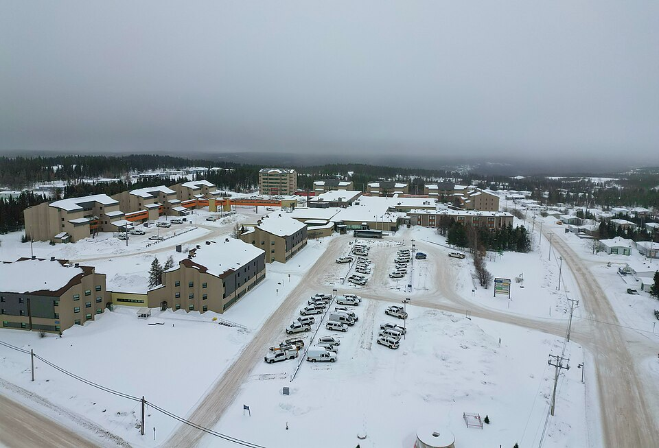
Source
Quintin Soloviev, Radisson, Quebec, Canada, Wikimedia Commons. Licence : Creative Commons BY 4.0.Le Nord-du-Québec est la plus vaste région administrative de la province. Ses 839 000 kilomètres carrés représentent environ 55 % du territoire québécois, pour une population d'environ 45 000 personnes, soit une densité de 0,06 habitant au kilomètre carré. Le français y est la langue la plus parlée, suivi des langues cries, de l'inuktitut et de l'anglais.
La région se divise en trois parties. La Jamésie occupe le sud, à l'exception des villages et des terres réservées aux Cris. Kativik couvre le Nunavik, au nord du 55e parallèle, où vivent les Inuit du Québec ainsi que le village naskapi de Kawawachikamach. Eeyou Istchee correspond au territoire de l'Administration régionale crie, avec ses villages et ses terres réservées.
Trois territoires dans une seule région
Compare les trois cartes. La Jamésie forme un bloc au sud, Kativik un bloc au nord, mais Eeyou Istchee se présente en petites taches dispersées. Ce ne sont pas des territoires du même type : les deux premiers découpent l'espace en régions continues, le troisième rassemble les terres réservées aux Cris, éparpillées à l'intérieur de la Jamésie. Un même territoire peut donc être administré par deux autorités superposées.
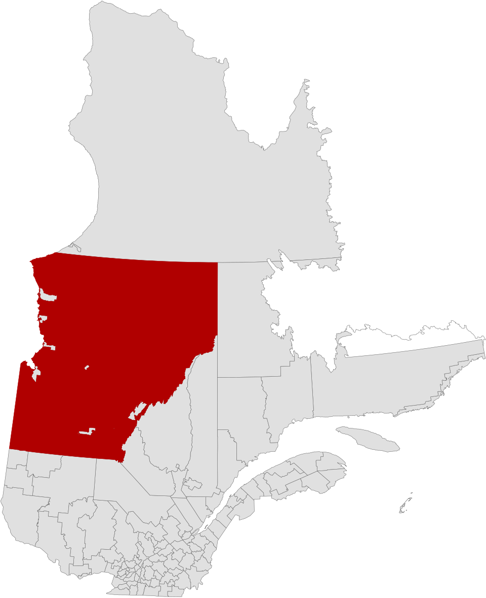
Source
Sémhur, Quebec MRC Jamésie location map, Wikimedia Commons. Licence : Creative Commons BY-SA 4.0.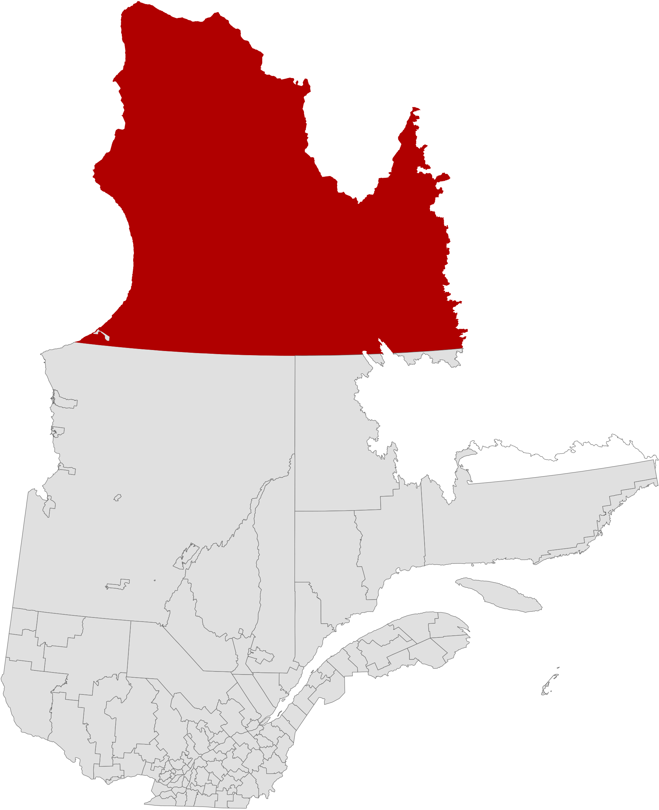
Source
Sémhur, Quebec MRC Kativik location map, Wikimedia Commons. Licence : Creative Commons BY-SA 4.0.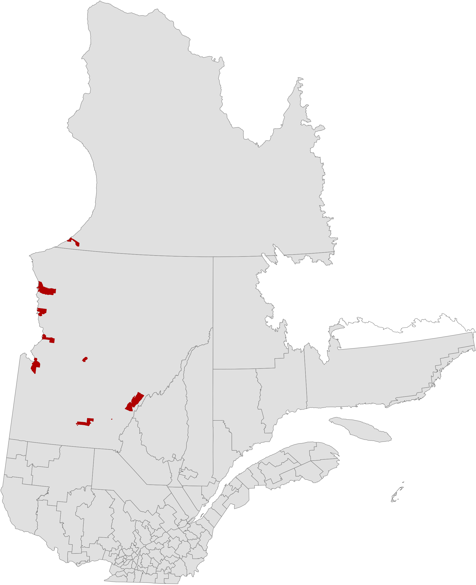
Source
Sémhur, Quebec MRC Eeyou Istchee location map, Wikimedia Commons. Licence : Creative Commons BY-SA 4.0.Un réseau de grandes rivières
Le territoire est traversé par plusieurs des rivières les plus puissantes du Québec : la Harricana, la Nottaway, la Broadback, la Rupert, l'Eastmain et la Grande Rivière. Ce réseau a une particularité : ce sont de grandes rivières avec peu d'affluents, si bien que l'eau des lacs du plateau se jette directement dans elles. Toutes sont alimentées par des pluies et des chutes de neige abondantes. Le niveau monte au printemps et au début de l'automne, et le débit reste fort toute l'année. La Grande Rivière coule sur plus de 800 kilomètres avant d'atteindre la baie, en longeant à peu près le 53e parallèle.
Source : Alloprof
Le projet du siècle
Dès 1965, Hydro-Québec reprend l'exploration des rivières du nord entre les 52e et 55e parallèles, et intensifie les relevés du côté de la Grande Rivière et de l'Eastmain à partir de 1967. Des centaines d'hommes sont déposés en hydravion et en hélicoptère au milieu de la taïga pour effectuer des relevés géodésiques et des études géologiques. Deux constats en ressortent. Le débit de plusieurs rivières suffit à justifier un méga-complexe, et il faudra aménager des réservoirs pour augmenter le débit de certaines d'entre elles.
Dans les années 1970, le choc pétrolier et la hausse constante de la consommation rendent le projet nécessaire. Le gouvernement de Robert Bourassa lance le projet de la Baie-James, aussi appelé le projet du siècle. Il crée de l'emploi pour des milliers de travailleurs à une époque de chômage élevé. Mais il entraîne aussi le détournement de plusieurs rivières importantes, ce qui n'est pas sans conséquence pour le milieu naturel et pour les Autochtones.
L'aménagement Robert-Bourassa
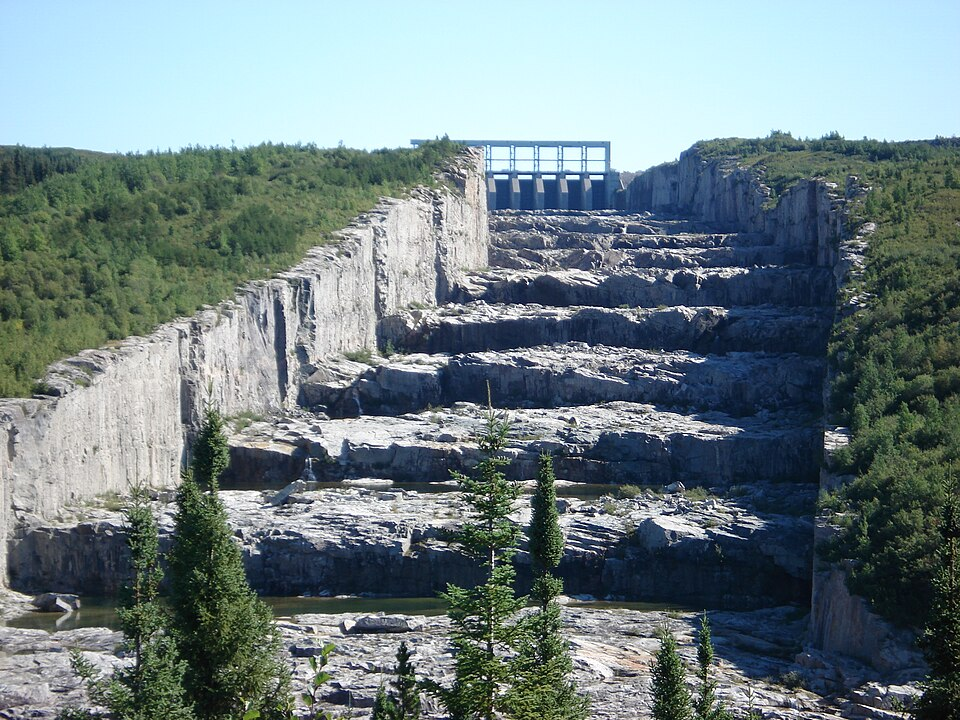
Source
fargomeD, Évacuateur de crues R-B, Wikimedia Commons. Licence : CC BY 2.5.L'aménagement Robert-Bourassa se dresse sur la Grande Rivière, à cinq kilomètres de la localité de Radisson. Construit en deux temps entre 1973 et 1992, il comprend un réservoir, un barrage principal de 162 mètres de haut et de 2 835 mètres de long, 29 digues, un évacuateur de crues et deux centrales. Les centrales Robert-Bourassa, avec 5 616 mégawatts et La Grande-2-A, avec 2 106 mégawatts, totalisent 7 722 mégawatts. La première est la plus puissante centrale hydroélectrique du Canada. Elle est creusée à 137 mètres sous terre et compte 16 turbines. Au plus fort des travaux, en 1977, le chantier employait plus de 6 000 personnes.
L'aménagement s'appelait La Grande-2 jusqu'en 1996, année où le gouvernement l'a renommé en l'honneur de l'ancien premier ministre, surnommé le père de la Baie-James. Son évacuateur de crues, une succession de bassins taillés dans le roc, porte le surnom d'escalier du Géant.
Les ententes avec les nations autochtones
La Convention de la Baie-James et du Nord québécois, signée en 1975, est le premier traité moderne conclu au Canada. Elle permet au gouvernement québécois de poursuivre et d'achever la construction des barrages, et reconnaît en contrepartie des droits particuliers aux Cris et aux Inuit, territoriaux comme culturels, en plus d'une indemnité de 225 millions de dollars étalée sur vingt ans. L'idée centrale est de préserver leur autonomie, de les inclure dans le développement économique de la région et de protéger leurs activités traditionnelles de subsistance. Les Naskapis de Kawawachikamach se joignent à l'entente en 1978 en signant la Convention du Nord-Est québécois.
Source : Yanick Turcotte, l'Encyclopédie canadienne
La Paix des Braves, signée le 7 février 2002 à Waskaganish, est une entente politique et économique entre le gouvernement du Québec et les Cris. Le gouvernement s'engage à associer les Cris à la mise en valeur du Nord et à leur verser plus de 3,6 milliards de dollars sur cinquante ans. En retour, les Cris mettent fin à leurs revendications territoriales, abandonnent des poursuites de plus de 8 milliards contre le Québec et des sociétés forestières, et acceptent le développement des centrales jumelles Eastmain-1 et Eastmain-1-A.
Source : Réjean Bourdeau, La Presse
Les conséquences sur le territoire
Le projet a transformé la faune et la flore du secteur, et continue de le faire. Des rivières ont été détournées, d'autres ont vu leur débit fortement réduit ou augmenté, et des terres bordant les lacs et les rivières ont été inondées. La décomposition des forêts noyées a libéré du mercure, qui s'est accumulé dans la chair des poissons et donc chez ceux qui les mangent. Tout un écosystème et un mode de vie cri qui a mis des milliers d'années à se former en ont été bouleversés. Les Cris peuvent de moins en moins chasser, trapper et pêcher dans les territoires touchés. Ils ont obtenu des gains économiques, mais le projet a eu des conséquences majeures sur leur façon de vivre.
La Côte-Nord
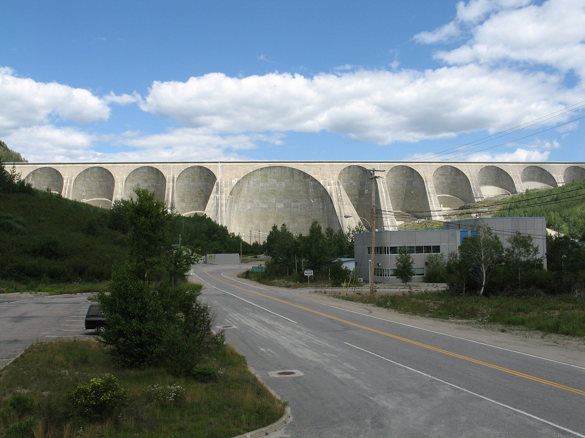
Source
Bouchecl 20:56, 11 August 2007 (UTC), Barrage Daniel-Johnson2, Wikimedia Commons. Licence : Creative Commons BY-SA 3.0.La Côte-Nord s'étend des rives du Saguenay jusqu'aux frontières du Labrador, du fleuve Saint-Laurent au sud jusqu'au 55e parallèle au nord. Avec ses 351 614 kilomètres carrés, elle représente environ 21 % de la superficie du Québec et occupe le deuxième rang parmi les régions administratives, tant pour la superficie que pour la production d'hydroélectricité. Elle compte environ 90 000 habitants, soit 1 % de la population québécoise, pour une densité de 0,4 habitant au kilomètre carré. La moitié des résidents vivent à Sept-Îles et à Baie-Comeau, et la plupart des autres villages comptent moins de 2 000 personnes.
Un chapelet de rivières
De nombreuses rivières descendent vers le fleuve. D'ouest en est, on compte notamment la rivière des Escoumins, la Betsiamites, la rivière aux Outardes, la Manicouagan, la Sainte-Marguerite, la Moisie, la Magpie, la Romaine et la Natashquan. La région abrite aussi le réservoir de Caniapiscau, la plus grande étendue d'eau douce de la province. Mais le plan d'eau le plus célèbre reste le réservoir Manicouagan, un cratère météoritique inondé par la construction du barrage, dont la forme annulaire lui vaut le surnom d'oeil du Québec. Il couvre environ 1 950 kilomètres carrés et se voit depuis l'espace.
Manic-5 et le barrage Daniel-Johnson
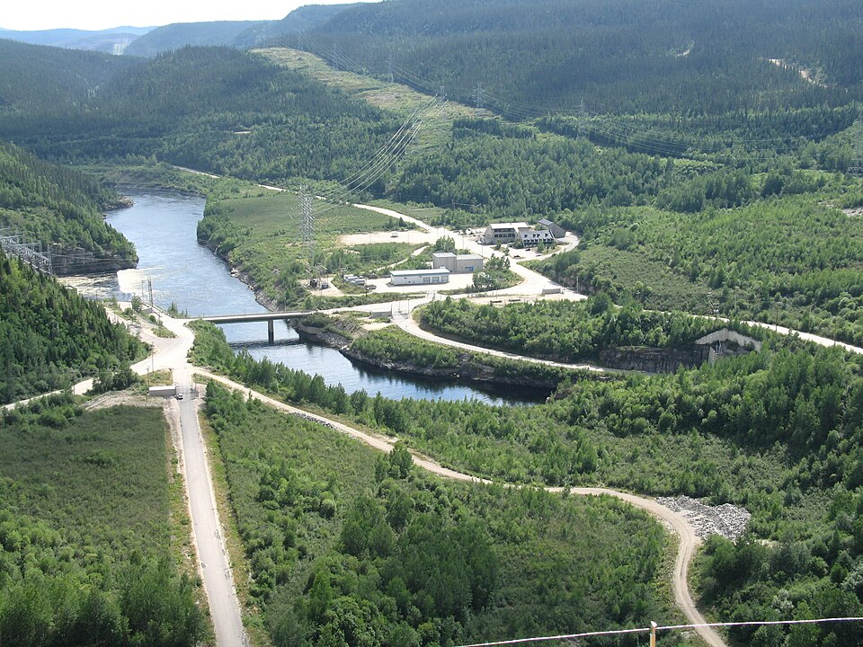
Source
Bouchecl, Manic-5 and Manic-5-PA overview, Wikimedia Commons. Licence : Creative Commons BY-SA 3.0.L'aménagement Manic-5 se trouve à 214 kilomètres au nord de Baie-Comeau. Il fait partie du complexe Manic-Outardes, construit de 1959 à 1978, qui compte sept centrales : Manic-1, Jean-Lesage, René-Lévesque, Manic-5, aux Outardes-2, aux Outardes-3 et aux Outardes-4. Une centrale de suréquipement, Manic-5-PA, s'y ajoute en 1989 et 1990. Le barrage Daniel-Johnson détient le titre de plus grand barrage à contreforts et à voûtes multiples du monde. Haut de 214 mètres et long de 1 314 mètres, il compte 14 contreforts et 13 voûtes, et sa silhouette est visible depuis la route 389 sur plusieurs kilomètres. Les deux centrales qu'il alimente totalisent 2 660 mégawatts.
Le complexe de la Romaine
Le plus récent grand chantier du Québec se trouve lui aussi sur la Côte-Nord. Le complexe de la Romaine, au nord de Havre-Saint-Pierre, réunit quatre centrales pour une puissance de 1 550 mégawatts et une production annuelle d'environ 8 térawattheures, de quoi alimenter près de 500 000 maisons.
Les travaux, lancés en 2009, se sont achevés en septembre 2022. Le chantier a employé jusqu'à 2 000 personnes, dont environ 40 % venaient de la Côte-Nord et environ 10 % étaient autochtones. Les retombées sont estimées à 3,5 milliards de dollars pour le Québec, dont 1,3 milliard pour la région. Trois ententes ont été conclues avec quatre communautés innues : Ekuanitshit, Nutashkuan, Unaman-shipu et Pakua-shipi.
De la centrale à la maison
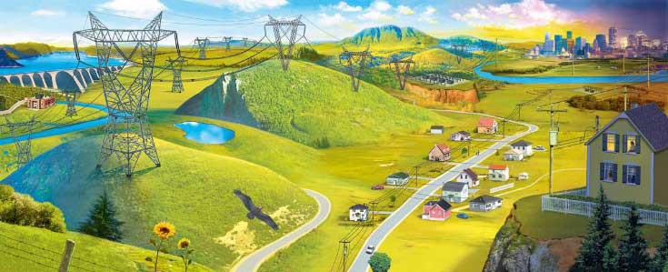
Source
Hydro-Quebec, De la centrale a la maison, repris dans le dossier du RECIT, Service national du RECIT, univers social. Licence : Droits reserves a des fins educatives.Produire l'électricité ne suffit pas, il faut l'amener là où on la consomme. Et au Québec, les deux endroits sont très éloignés l'un de l'autre : de la baie James à Montréal, il y a près de 1 000 kilomètres à vol d'oiseau.
Les lignes à 735 000 volts
Le réseau d'Hydro-Québec : centrales, rivières, lignes à 735 kV
Choisis une étude de cas ou une centrale
Sources : Hydro-Québec, Centrales hydroélectriques (puissance, mise en service, type de centrale) ; Hydro-Québec, communiqué du 17 août 2026 sur Churchill Falls ; Wikipédia, Centrale de Churchill Falls ; tracé des lignes : OpenStreetMap (ODbL), extrait diffusé par l'IDDPNQL ; positions des centrales : OpenStreetMap (Nominatim) ; fond de carte : Natural Earth (domaine public).
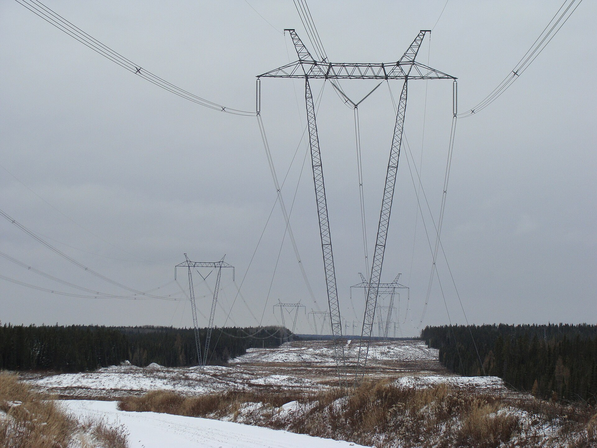
Source
Khayman, Pylônes près de Chapais04, Wikimedia Commons. Licence : Creative Commons BY-SA 3.0.Plus la distance est longue, plus le risque de perdre en route une partie de l'énergie est élevé. Pour transporter de grandes quantités d'électricité, il faut donc augmenter la tension du courant, ce qui réduit les pertes et le coût total du transport.
Cette solution est née d'un désaccord. Le coût des infrastructures de transport divisait les ingénieurs d'Hydro-Québec. Un jeune ingénieur, Jean-Jacques Archambault, a proposé de construire des lignes à 735 000 volts, une tension bien plus élevée que ce qui se faisait à l'époque. Devant le scepticisme de ses collègues plus âgés, il a persisté et a fini par convaincre la direction. La première ligne à 735 kilovolts a été mise en service le 29 novembre 1965, une première mondiale.
Le réseau québécois compte aujourd'hui plus de 34 900 kilomètres de lignes de transport à haute tension et environ 539 postes de transformation. Il est relié aux réseaux voisins par dix-huit interconnexions, qui permettent d'importer et d'exporter de l'électricité.
Source : Hydro-Québec et Service national du RÉCIT en univers social
Les industries énergivores
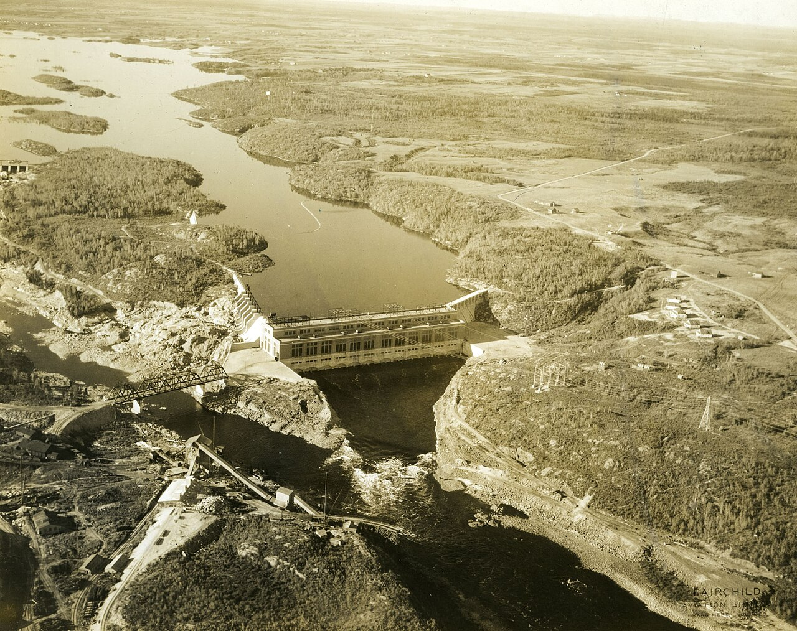
Source
Unknown author Unknown author, Vue aérienne de la centrale hydroélectrique d'Isle-Maligne à Alma (Québec), Wikimedia Commons. Licence : Domaine public.Les alumineries consomment d'énormes quantités d'électricité, ce qui les pousse à s'installer près des régions productrices. L'aluminerie de Baie-Comeau, sur la Côte-Nord, bénéficie ainsi d'une production abondante, de tarifs avantageux et d'un port qui permet d'importer la bauxite et d'exporter l'aluminium. Au Saguenay-Lac-Saint-Jean, la stratégie est différente : l'entreprise y possède ses propres installations de production hydroélectrique, qui comblent environ 90 % des besoins de ses alumineries québécoises. Le reste vient d'Hydro-Québec, et lorsque sa production dépasse ses besoins, elle peut lui revendre ses surplus.
Comparer les deux territoires
Deux territoires énergétiques, six critères
Choisis un critère
Les deux régions produisent de l'hydroélectricité à grande échelle, mais elles n'y sont pas arrivées de la même façon ni à la même époque. Compare-les critère par critère avant de répondre aux questions.
Hydroélectricité et développement durable
Un projet est-il durable? Trois questions
Choisis un critère
Un projet hydroélectrique n'est pas durable du seul fait qu'il utilise une ressource renouvelable. Hydro-Québec conçoit ses grands projets en fonction de trois critères : le projet doit être acceptable sur le plan environnemental, rentable sur le plan économique, et accueilli favorablement par les communautés locales, notamment les populations autochtones sur leurs territoires ancestraux.
Applique ces trois critères au projet de la Baie-James en te servant de l'interface ci-dessus. Chaque onglet présente ce qui plaide pour et ce qui plaide contre, puis te laisse trancher.
Les Naskapis et le lac Cambrien
Un dossier en cours montre comment la question se pose aujourd'hui. Le territoire traditionnel des Naskapis s'étend bien au-delà de leur village de Kawawachikamach, jusqu'à la région des lacs Cambrien et Nachicapau, une étendue de 5 740 kilomètres carrés, soit plus de dix fois la superficie de l'île de Montréal.
Ce secteur présente un potentiel hydroélectrique, mais il abrite aussi des caractéristiques écologiques particulières et sert toujours à des activités communautaires. Depuis 2018, la Nation naskapie, les Inuit, l'administration régionale Kativik et le gouvernement du Québec travaillent ensemble à trouver des solutions de rechange au développement hydroélectrique du lac Cambrien.
Source : Service national du RÉCIT en univers social, d'après Radio-Canada
La Convention du Nord-Est québécois, signée en 1978, a transformé la vie des Naskapis. Le village compte aujourd'hui une école primaire et secondaire, un service de garde, une caserne de pompiers, un poste de police, une radio communautaire, un magasin général, un aréna, une piscine, un centre communautaire et un CLSC. En contrepartie, l'entente prévoyait que les Naskapis renoncent à leurs revendications et à leurs droits territoriaux ancestraux.
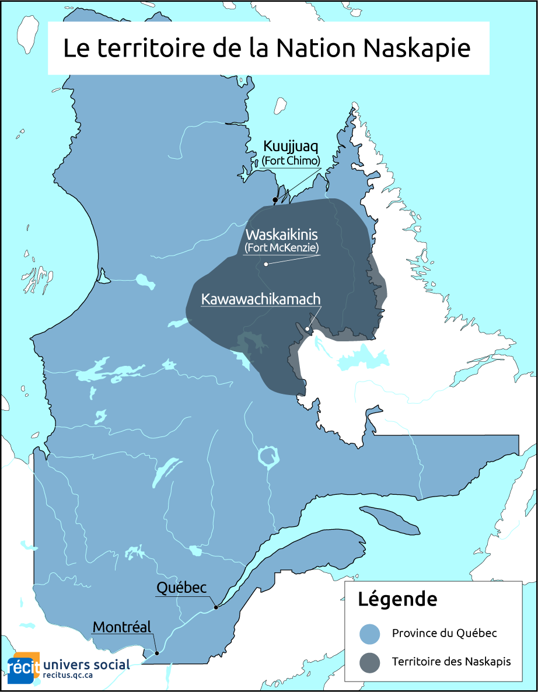
Source
Service national du RECIT, univers social, Territoire ancestral naskapi, Service national du RECIT, univers social. Licence : Creative Commons BY-NC-SA.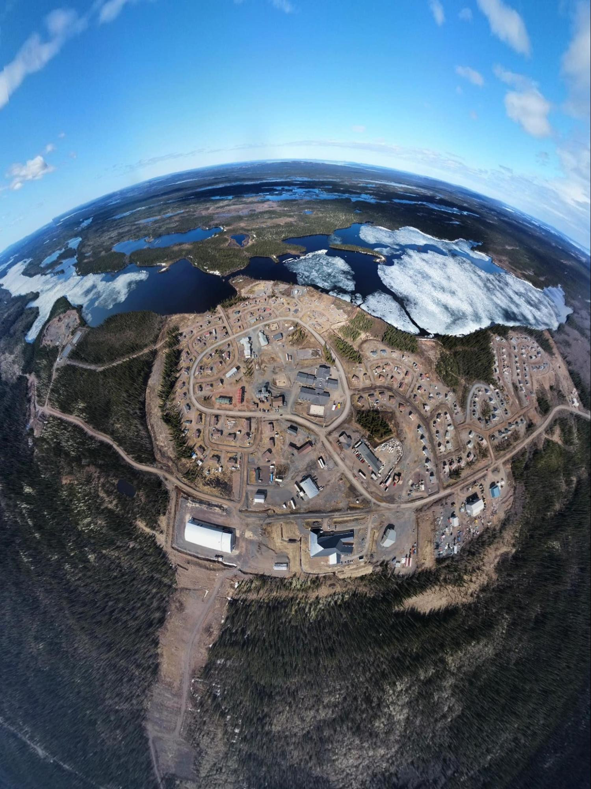
Source
Benjamin Jancewicz, The Naskapi Nation of Kawawachikamach for a height of 500 meters (2021), Service national du RECIT, univers social. Licence : Droits reserves a des fins educatives.Faut-il un nouveau barrage?
Le débat sur les besoins d'électricité se joue aussi sur le terrain. Sur la Basse-Côte-Nord, à l'est de la Romaine, Hydro-Québec étudie depuis 2023 la rivière du Petit Mécatina, où aucune centrale n'a encore été construite. Avant toute décision, plusieurs groupes font entendre leur voix. Évalue leurs propositions, puis prends position.
Le projet Minecraft du RÉCIT
Le Service national du RÉCIT propose une tâche en deux temps, prévue pour six périodes, où l'élève choisit l'emplacement d'un aménagement hydroélectrique en tenant compte des enjeux des différents acteurs, puis le reconstruit dans Minecraft Éducation. La compétence visée est d'interpréter un enjeu territorial.
Sources
- Service national du RÉCIT en univers social
- Territoire énergétique et la nation des Naskapis, dossier du RÉCIT
- Territoire énergétique, projet Minecraft du RÉCIT
- Hydro-Québec, Plan d'action 2035
- Régie de l'énergie du Canada, profil énergétique du Québec
- Encyclopédie canadienne, Convention de la Baie-James et du Nord québécois
- Alloprof, les territoires énergétiques de la Jamésie et de la Côte-Nord
- Fondation Rivières, la rivière du Petit Mécatina
- Noovo, Hydro-Québec lance une étude préliminaire sur la rivière du Petit Mécatina
- Radio-Canada, des avis partagés sur un barrage au Petit Mécatina (2023)
- Radio-Canada, le chef d'Unamen Shipu et Fondation Rivières contre un barrage (2023)
- Le Nord-Côtier, Incertitude pour le parachèvement de la route 138 en Basse-Côte-Nord (19 juin 2026)
- Radio-Canada, Réévaluation complète du projet de route 138 en Basse-Côte-Nord (juin 2026)
- Ministère des Transports du Québec, prolongement de la route 138 sur la Basse-Côte-Nord